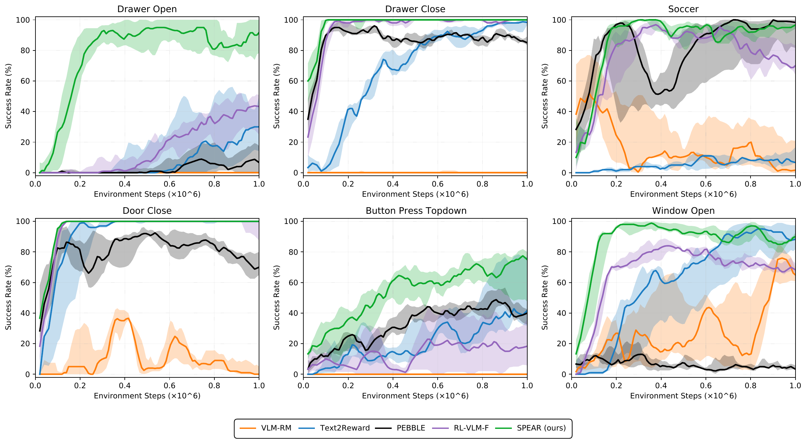
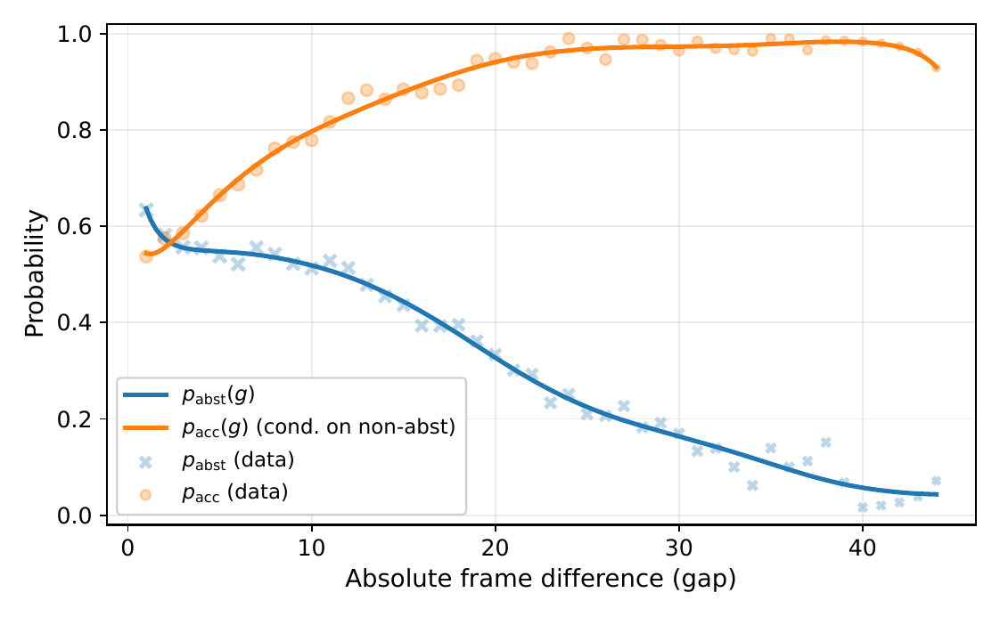
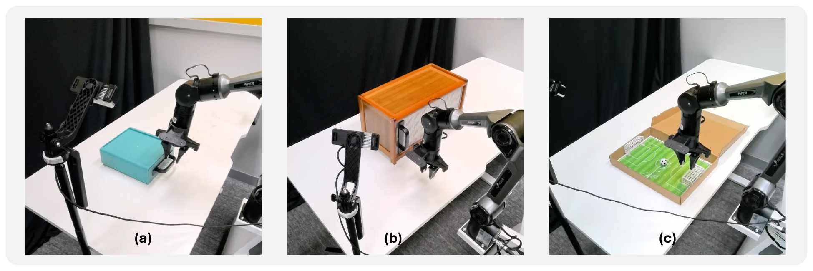

SPEAR: Selective Preference Elicitation with Adaptive Rewards for VLM-Guided Robotic Manipulation
The University of Hong Kong
IROS 2026
Abstract
Recent Vision-Language Models (VLMs) enable automated preference labeling for robotic manipulation, yet their deployment remains impractical since each query incurs substantial inference cost, while VLMs frequently abstain on visually challenging comparisons. We propose SPEAR, a framework that transforms VLMs into efficient preference oracles via two synergistic mechanisms. First, we design distinguishability-aware query selection to reduce abstention rates by targeting only informative and distinguishable comparisons. Second, we deploy an adaptive reward transition that bootstraps exploration with VLM-synthesized guidance before preference-based refinement. Experiments on the manipulation benchmarks demonstrate that SPEAR achieves 88.9% average success, outperforming baselines by 23.3 percentage points, while significantly reducing abstention and wall-clock training time on contact-rich tasks. SPEAR learns three Mobile ALOHA manipulation tasks fully online on real hardware, demonstrating end-to-end real-world applicability. By addressing query efficiency and exploration challenges, SPEAR establishes VLMs as practical preference oracles for scalable robot learning without manual reward engineering.
Method Overview
SPEAR addresses two practical obstacles to VLM-guided preference-based reinforcement learning: obtaining informative, answerable preferences under a limited query budget, and bootstrapping effective exploration when preference feedback alone is sparse.
Distinguishability-aware Query Selection
Conventional preference acquisition often wastes expensive VLM queries on visually ambiguous trajectory pairs, where the VLM cannot provide reliable preference labels. SPEAR addresses this limitation by combining global semantic features and local spatial features to capture multi-scale visual differences between trajectories. An online-adapted distinguishability model predicts the likelihood of obtaining valid VLM feedback, which is further integrated with information gain to prioritize informative and answerable comparisons. This mechanism reduces unnecessary queries and improves the efficiency of preference-based learning.
Adaptive Reward Transition
Preference-based reinforcement learning faces an exploration bootstrapping challenge: initially random policies rarely generate task-relevant trajectories that provide meaningful preference signals. SPEAR introduces a two-stage reward strategy that first uses VLM-synthesized warm-up rewards to guide exploration toward task-relevant behaviors. Once the warm-up learning progress saturates, the framework transitions to a learned preference-based reward for further policy refinement. Relay exploration helps preserve behavioral diversity throughout this process, enabling the collection of informative trajectories without manually engineered task rewards.
Simulation Experiments
We evaluate SPEAR on six Meta-World manipulation tasks: drawer-open, drawer-close, button-press-topdown, soccer, door-close, and window-open. The learning curves below are reproduced directly from the accepted paper.

SPEAR reaches an average final success rate of 88.9%, 23.3 percentage points above RL-VLM-F in the paper's comparison. At a matched 30% success level on drawer-open (without reward transition), SPEAR uses 960 preference queries with a 29.6% abstention rate versus 1,640 queries and 55.5% abstention for RL-VLM-F.
VLM Feedback Diagnostics
An offline diagnostic study examines how visual distinguishability affects preference oracle behavior, averaged over five VLM backbones. The paper reports that larger visual differences generally reduce abstention and improve preference accuracy.

Real-World Robot Experiments
SPEAR is evaluated on a physical Mobile ALOHA system, where its online exploration and preference-learning pipeline is trained directly on the robot, without sim-to-real transfer.

Real-Robot Demonstration
SPEAR real-robot experiments · Mobile ALOHA
In the paper's online training experiments, the policies converge after 18.2K environment steps for drawer-open, 16.6K for window-open, and 12.6K for soccer.
BibTeX
@inproceedings{wu2026spear,
title = {SPEAR: Selective Preference Elicitation with Adaptive Rewards for VLM-Guided Robotic Manipulation},
author = {Wu, Zewen and Liu, Ruizhe and Zhou, Pei and Chen, Feng and Yang, Yanchao},
booktitle = {IEEE/RSJ International Conference on Intelligent Robots and Systems (IROS)},
year = {2026},
eprint = {2610.21621},
archivePrefix = {arXiv},
primaryClass = {cs.RO},
url = {https://arxiv.org/abs/2610.21621}
}